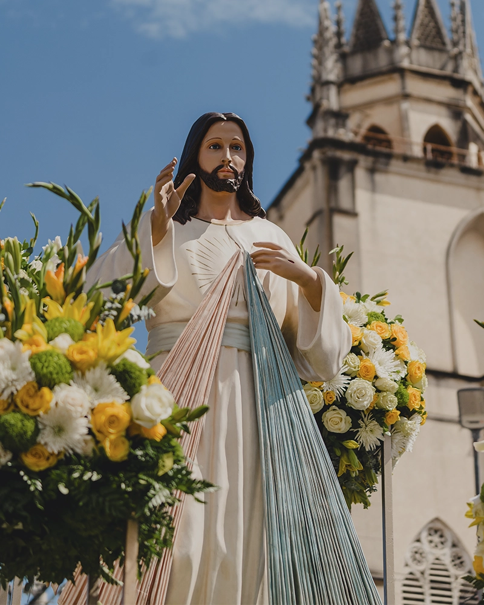

Devoción a la Divina Misericordia
Acercando el mensaje de Cristo a través de Santa Faustina.
Lo esencial del culto
La esencia del culto a la Divina Misericordia es la confianza inquebrantable en el amor de Dios. No se trata solo de rezar, sino de tener una actitud viva de entrega, simbolizada en la inscripción: "Jesús, en Ti confío".
Elementos de Devoción
- La Imagen: Origen e historia de la pintura.
- La Fiesta: El segundo Domingo de Pascua.
- La Hora de la Misericordia: "A las tres de la tarde implora Mi misericordia".
- La Coronilla: Promesas de Jesús para los moribundos.
